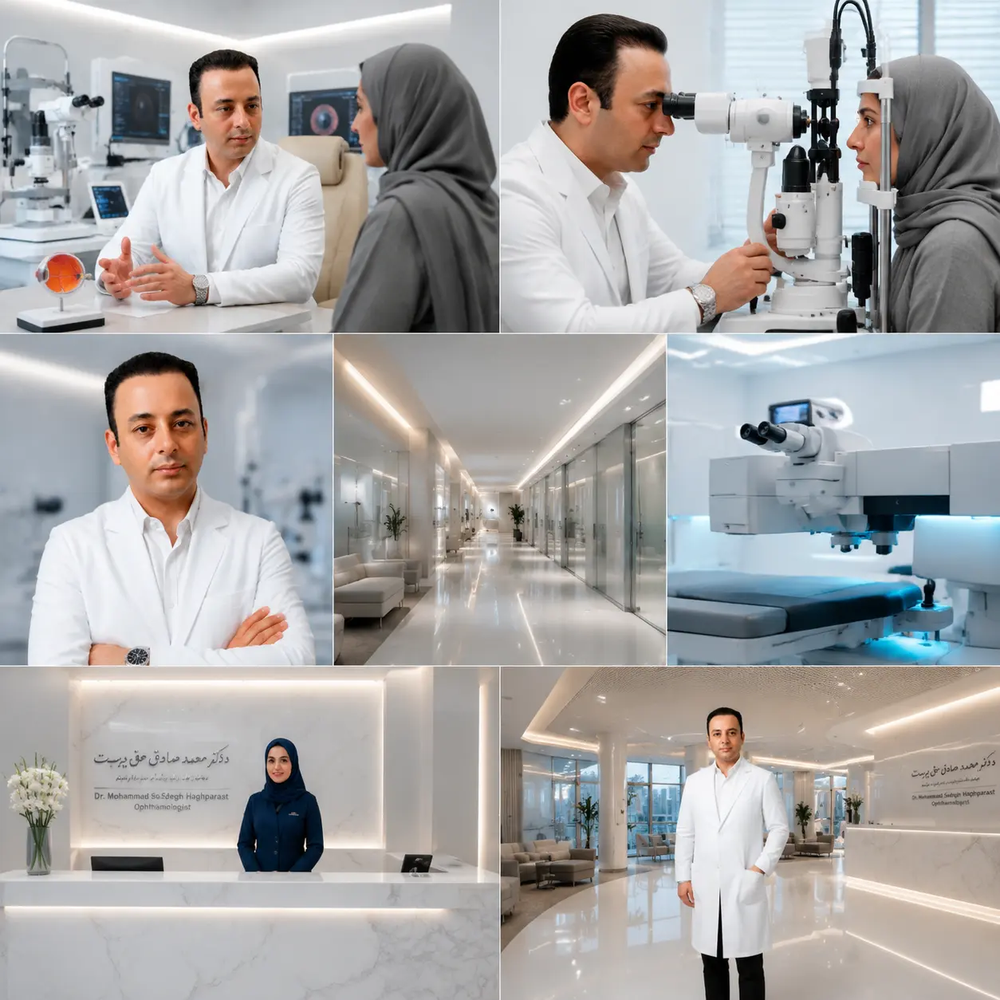

خدمات درمانی چشم
تشخیص و درمان بیماریهای چشم مانند آب مروارید، گلوکوم، قوز قرنیه، خشکی چشم، تنبلی چشم و سایر مشکلات بینایی با رویکرد علمی و مرحلهبهمرحله.
مشاهده خدمات درمانیدر کلینیک، مسیر نوبتدهی چشمپزشکی، معاینه چشم، بررسی علائم بینایی و درمان بیماریهای چشم با توضیح شفاف و تجربهای آرام برای بیمار طراحی شده است.


در کلینیک، مراقبت از سلامت چشم با تخصص و فناوری انجام میشود. خدمات درمانی، زیبایی و لیزر چشم بهصورت دستهبندیشده معرفی شدهاند تا بیمار سریعتر مسیر مناسب خود را پیدا کند.
تشخیص و درمان بیماریهای چشم مانند آب مروارید، گلوکوم، قوز قرنیه، خشکی چشم، تنبلی چشم و سایر مشکلات بینایی با رویکرد علمی و مرحلهبهمرحله.
مشاهده خدمات درمانیلیزر چشم برای حذف یا کاهش وابستگی به عینک، بلفاروپلاستی، ترمیم پلک و جوانسازی پلک با تمرکز بر ایمنی، دقت و زیبایی طبیعی چشمها.
مشاهده خدمات زیبایی و لیزر
دکتر محمدصادق حقپرست، متخصص و جراح چشم، فارغالتحصیل پزشکی عمومی و تخصص چشمپزشکی از دانشگاه سراسری تهران و عضو بنیاد ملی نخبگان است. تمرکز ایشان بر لیزر چشم، حذف دائمی عینک، جراحیهای انکساری قرنیه و جراحی زیبایی و ترمیمی پلک است.
در کلینیک، انتخاب روش درمان بر اساس معاینه دقیق، شرایط قرنیه، سبک زندگی بیمار و استانداردهای روز دنیا انجام میشود تا درمانی ایمن، علمی و شخصیسازیشده ارائه شود.
مراجعه به پزشک متخصص چشم فقط برای زمانی نیست که دید کاملاً تار شده باشد. درد چشم، کاهش ناگهانی بینایی، دیدن جرقه یا لکههای شناور، قرمزی طولانی، خشکی شدید چشم و تغییر شماره عینک از علائمی هستند که بهتر است جدی گرفته شوند.
عینک یا لنز فعلی، نسخههای قبلی، نام داروهای مصرفی و سوابق بیماری را همراه داشته باشید.
معاینه دورهای چشم به تشخیص زودتر آب مروارید، گلوکوم، خشکی چشم و مشکلات شبکیه کمک میکند.
پس از معاینه، نتیجه بررسیها به زبان ساده توضیح داده میشود تا تصمیم درمانی آگاهانهتر باشد.
روند مراجعه در کلینیک شفاف طراحی شده تا بیمار بدون سردرگمی مراحل ثبت نوبت، پذیرش، معاینه و پیگیری را طی کند.
از دکمه دریافت نوبت، زمان پیشنهادی و علت مراجعه را ثبت کنید.
اطلاعات شما بررسی میشود و در صورت نیاز، زمان مناسب مراجعه هماهنگ خواهد شد.
معاینه چشم و بررسیهای لازم با تمرکز بر علت مراجعه انجام میشود.
نتیجه معاینه، مراقبتهای لازم و مسیر درمان یا مراجعه بعدی توضیح داده میشود.
فضای منظم، آرام و حرفهای کلینیک به بیماران کمک میکند با اطمینان بیشتری روند معاینه و درمان را دنبال کنند.


مطالب آموزشی کلینیک به بیماران کمک میکند علائم مهم را بهتر بشناسند، برای مراجعه آمادهتر باشند و درباره روشهای درمانی با آگاهی بیشتری تصمیم بگیرند.
تاری دید ناگهانی، کاهش دید یکطرفه، درد چشم یا دیدن جرقه و لکههای شناور بهتر است سریعتر توسط پزشک متخصص چشم بررسی شود.
مطالعه مقالات ←انتخاب روشهایی مانند PRK، فمتولیزیک یا اسمایل به شماره چشم، ضخامت قرنیه، سن، سبک زندگی و نتیجه معاینه تخصصی بستگی دارد.
مشاهده خدمات لیزر ←افتادگی یا پف پلک میتواند هم ظاهر چشم و هم میدان دید را تحت تأثیر قرار دهد و نیازمند بررسی تخصصی عملکرد و زیبایی پلک است.
مشاهده درباره پزشک ←چهار سوال پرتکرار این بخش از پنل مدیریت سایت و جدول سوالات پرتکرار خوانده میشود.
لطفاً چند لحظه صبر کنید.
اگر تاری دید، درد چشم، خشکی چشم، کاهش دید یا نیاز به بررسی تخصصی دارید، ثبت نوبت اولین قدم برای تصمیم درست درمانی است.
برای مراجعه حضوری به کلینیک دکتر محمدصادق حقپرست، موقعیت کلینیک بر اساس آدرس و مختصات ثبتشده در تنظیمات سامانه نمایش داده میشود.